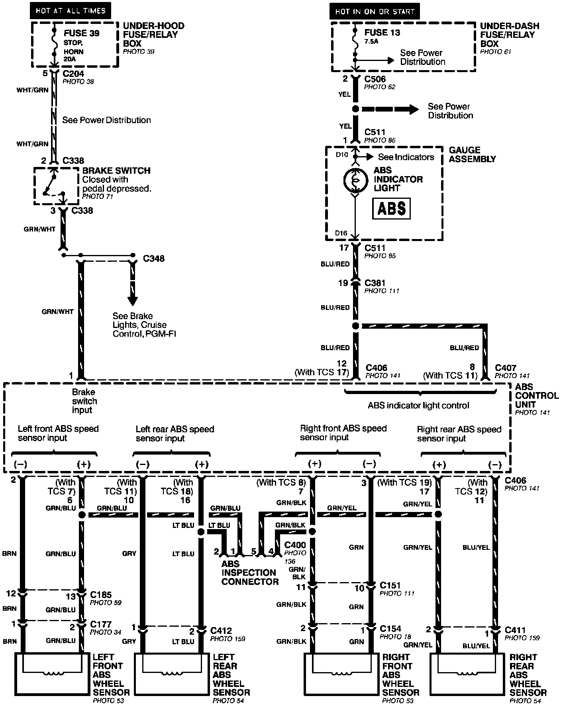
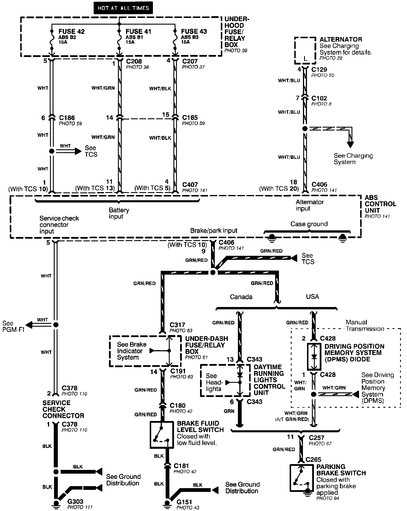
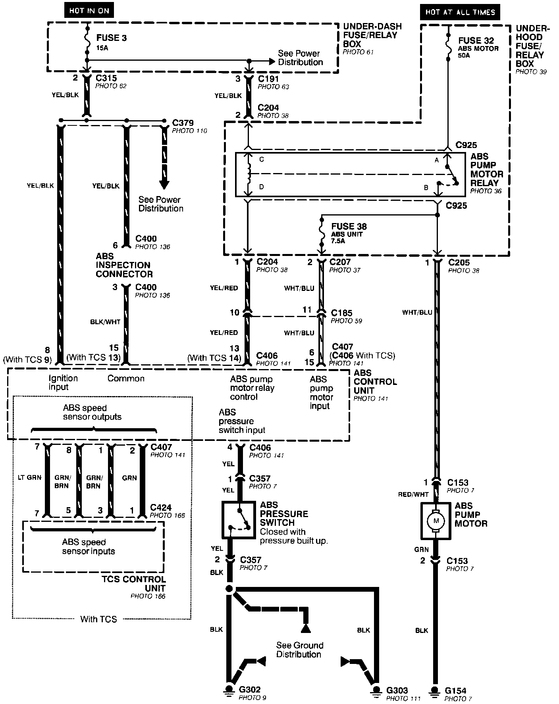
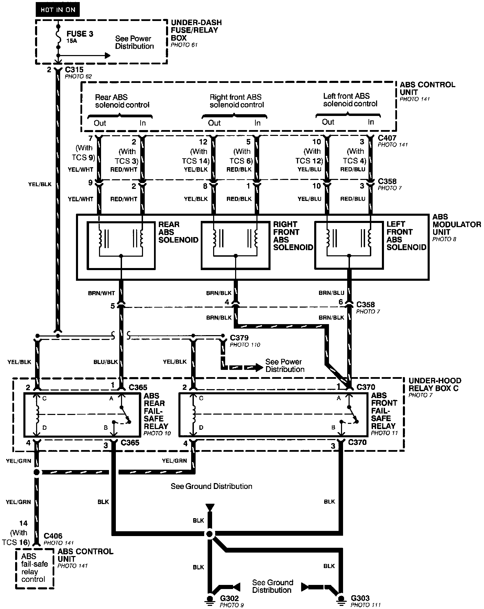

Anti-Lock Brake System (ABS)
Anti-lock Brake System (ABS)- Brake Switch, Indicator And Wheel Speed Sensor Inputs:

Anti-lock Brake System (ABS)- Power, Brake Fluid Switch And Parking Brake Switch Inputs:

Anti-lock Brake System (ABS)- Motor, Pressure Switch And Ignition Inputs:

Anti-lock Brake System (ABS)- Solenoid Control And Fail-safe Relays:
